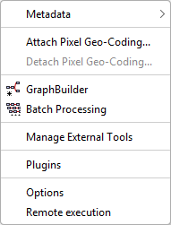
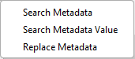

| Tools Menu | |


Allows searching metadata by name or value and replacing metadata values.
The Attach Pixel Geo-Coding tool allows the user to attach a pixel based geo-coding to the selected product.
The Detach Pixel Geo-Coding tool allows the user to detach the current pixel geo-coding and restores the previous geo-coding.
The Graph Builder tool allows the user to assemble graphs from a list of available operators and connect operator nodes to their sources.
The Batch Processing tool allows the user to execute a single reader/writer graph for a set of products.
The Stand-Alone Tools Adapter allows defining adapters - as GPF operators - for external processes/tools, that can be used either in a GPF graph or from the Toolbox GUI.
The Plugins dialog allows the user to manage the already installed plugins or install new ones either from a repository or from the local hard drive.
The Options dialog allows the user to customize application settings, preferences, and toolbox-specific parameters.
The Remote Execution Processor enables distributed processing by executing a slave graph on remote machines and then combining the results with a master graph on the local host to accelerate workflow execution.